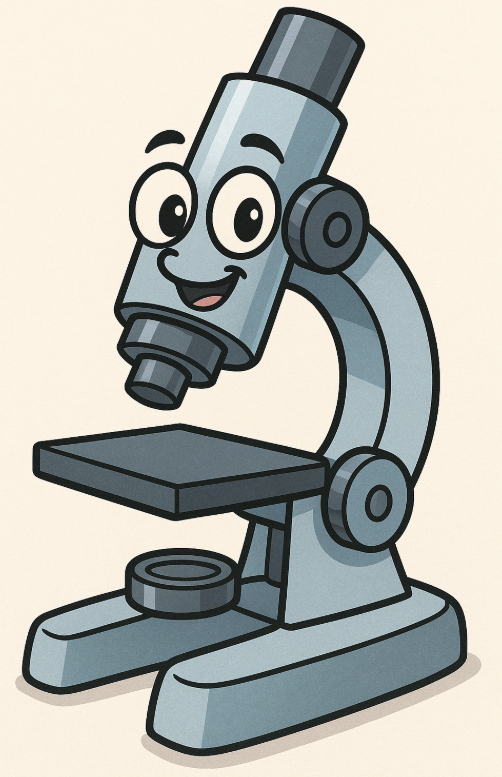

Dr. I. William Grossman was a deeply principled and compassionate man, known for his dedication to his family, his patients, and especially his lifelong passion for surgical pathology. Born to immigrant parents in Baltimore, he rose from working in a small family grocery store to becoming a distinguished physician, thanks to his perseverance, intellect, and love of learning. He trained at top institutions like Mount Sinai and later served both in the Army and as a leader in community hospitals, where he mentored many and advocated fiercely for excellence in pathology and lab medicine. Beyond his profession, he was a beloved mentor, advocate, and the “doctor’s doctor,” who valued integrity and the importance of doing things the right way. His career continued even into retirement, and he remained engaged until the onset of dementia and later pancreatic cancer. In his honor, his family donated to Dartmouth to support students, hoping to inspire in them the same love for pathology that defined his extraordinary life.
